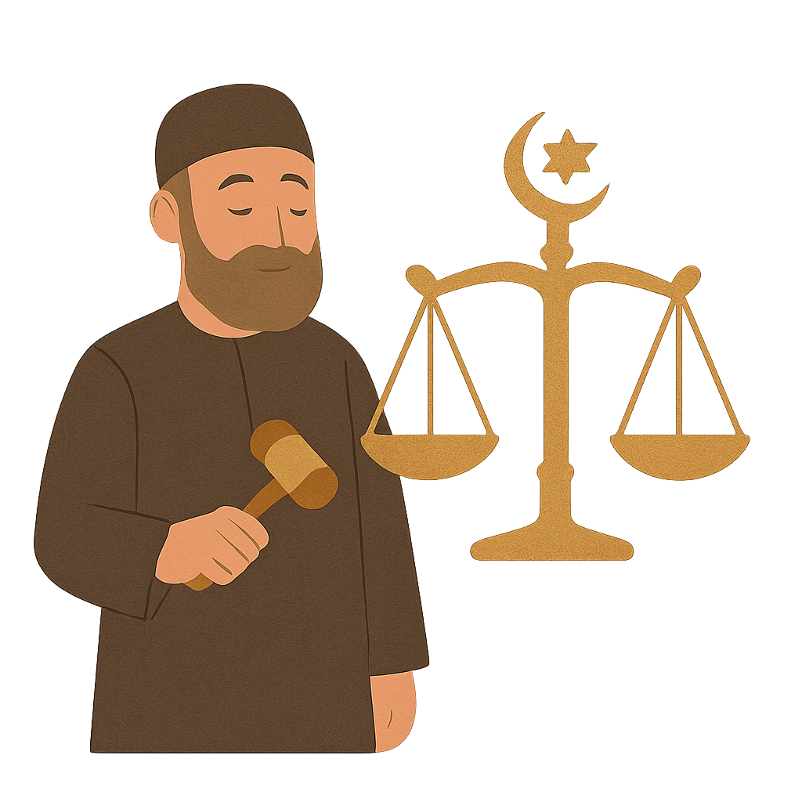

The Concept of Justice in Islam

1. Justice as a Divine Command
Allah commands believers to uphold justice. The Qur’an says: “Indeed, Allah commands justice and good conduct…” (16:90).
2. Fairness Regardless of Relations
Islam instructs Muslims to be just even if it is against themselves or their loved ones (Qur’an 4:135). Justice must be objective and not influenced by personal ties.
3. Equality and Accountability
All people are equal in the eyes of Allah. Justice includes treating others fairly, upholding rights, and ensuring that no one is above the law.